Campaign assets
Lockups
The two from the lockup page. Stacked for square and tall formats, one line for wide ones. The kerning nudges are baked in; don’t retype it.
Learn to
speak
Durban.CopyTranslateLook Up
Learn to speak Durban.CopyTranslateLook Up
OOH — Billboards
The Joburg buy: five sites, five boards. Each word sits where it applies.
AwehCopyLook UpTranslate — what you’d be saying [XXX]km south-east of this billboard. We measured.
— a greeting; also happy agreement.
(n.) — a traffic light.
“Our robots have ocean views. Yours have more robots.”
(n./adj.) — fancy.
“You so larney. Relax, come down.”
(v.) — do what you must.
“Your heart says Durban. HR says you have eighteen days. Dala what you must.”
(adj.) — a feeling; really, properly good.
“A warm ocean is kiff. A heated pool is a bath with admin.”
Street poles
Sets of three consecutive poles, read in driving order: the word and its definition, the example, the sign-off.
(interj.) — a warning.
“Chips, bru — you’re on mute.”
speak
Durban.
(n./adj.) — fancy.
“You so larney. Relax, come down.”
speak
Durban.
Airport
Statement layout. Arrivals greets, departures assigns homework.
Aweh. You made it. The water’s warm. It’s always warm. That’s the point.
— a greeting; also happy agreement.
Flight time: one lesson per ten minutes.
Land fluent-ish.
Social stories
Twelve templates. 4a–e are formats; 4f–l turn the story’s own mechanics (poll, tap, hold, link, question, screenshot) into the ad. Dashed zones mark where native stickers go in-app. Type stays clear of the top 170px and bottom 230px.
(n.) — home.
“A pozi is a home. In Dezemba it’s a home with six cousins in it. There’s still room for you.”
Book leave now. HR is slower than the N3.
— to leave.
“Where you are. Affectionately.”
AWEH. tee184 of 300 left
The one-word tees: Aweh. Ekse. Shap. Collection in person at Gateway, Durban.
“We’re just going to park at the pozi.” You are going to:
“The owens are five minutes away.”
When do the owens arrive?
“Hi all, just circling back to see if we’re aligned on Friday drinks?”
Sent 09:14. Read by 11. Replied to by nobody.
Sent 09:14. Everyone’s there by four.
— yes, all good, agreed, sorted, bye — depending on tone.
Nothing’s moving. That’s Durban pace. You’re a natural.
Last week’s answer: “Thirty minutes. Forty if we stop for a bunny. We stop for a bunny.”
Send.
Vy.
Dear [Manager’s name],
Consider yourself choon’d: I’m vying from the 15th. Back when the tan fades.
Shap shap,
[Your name]
Full template on the site. Courage sold separately.
Social feed
4:5 posts. The dictionary entry runs the 44-part series; the forecast and Ekselator posts carry the argument; the postcard is the one people make on the site.
(v.) — to like.
“‘Like’ is for LinkedIn. Smaak is for Durban.”
Same time tomorrow: also nice.
— Lesson 26 · Vaalie— people from Gauteng.
Hello team, honestly the new project is great. Watch out for the deadline on Friday. Thanks, I am leaving early to go home.
Aweh team, ekse the new project is kiff. Chips! for the deadline on Friday. Thanks, I’m vying early to go pozi.
Link-share size. Corporate surfaces, used against themselves.
Issued by a mall. Verified by the aunties. Valid wherever the water’s warm.
Certified-ish · 44 of 44 lessonsDear [Manager’s name],
I am writing to formally choon you that I will be vying from [date] to [date].
Please note this is not a request. See Lesson 09. My out-of-office will say “aweh” and nothing else.
Kind regards, and kiff regards,
Template in the Study pack.
Effective 15 Dezemba. Thank you to my cooler box for believing in me.
— Template in the Study pack.Notice period: served. References: the owens.
— Lesson 11They’ve been practising since June.
— Lesson 28Requirements: 44 words. Location: remote (very). Start date: Dezemba. Apply: learntospeakdurban.com.
The sticker packs. 44 words, each as big as the square allows, two packs because WhatsApp stops at 30.
Web banners
The Ekselator, miniature. Three beats: the Joburg sentence, the sentence selected with Translate on, the Durban version with the CTA. 9 s a loop, three loops, rests on beat 3. Shown at actual size.
Just circling back on this.
Just circling back on this.CopyLook UpTranslate
Check this, ekse.
Hope this email finds you well.
Hope this email finds you well.CopyLook UpTranslate
Whatkindekse.
Let’s align on next steps before Friday.
Let’s align on next steps before Friday.CopyLook UpTranslate
Park. We’ll check it at the beach.
— to chill.
One master, the whole journey. Header band, the body in a paper card, footer. 9a is the daily lesson; 9b–f are the lifecycle sends.
(n.) — board shorts.
“Pack baggies. That’s it. That’s the list. The N3 is that way.”
Reading time: 40 seconds. Fluency time: Dezemba.
Unsubscribe any time — no hard feelings, bru.
44 lessons. One exam. No prerequisites except leaving. First lesson attached. Don’t be a prawn about it.
Unsubscribe any time — no hard feelings, bru.
Halfway. In road terms: Harrismith. The gqom takes over from here.
Unsubscribe any time — no hard feelings, bru.
The exam unlocks 1 Dezemba. All 44 words. The aunties can hear a vaalie accent through a closed window. Prepare accordingly.
Unsubscribe any time — no hard feelings, bru.
You passed. Certificate attached. Gateway’s expecting you — the merch counter knows your name. Aweh.
Unsubscribe any time — no hard feelings, bru.
Ironically, the word was Prawn. Come back. The course misses you. The course is lying — it’s a course. But still.
Unsubscribe any time — no hard feelings, bru.
In-mall
Gateway is the campus, so the mall gets the most furniture. Screens 10f–l run on the mall’s iVision network.
Lesson zone
That’s basically studying. The rest is 44 words.
learntospeakdurban.com
(n./adj.) — fancy.
“You so larney. Relax, come down.”
Applies to everything in this wing. The exam unlocks 1 Dezemba at learntospeakdurban.com.
(v.) — to chill.
“Not the Zoo Lake ekse.”
Demonstrated on this bench daily. Sit. Study. You’re already doing Lesson 44.
(n.) — brother.
“Come down, bru. Not your morning brew — although we have those too.”
(v.) — to eat.
Food court this way. Leave the fork.No card, no merch. Okay, one exception: your gran. Bring the card.
Daily, until Dezemba.
Learn to Speak Durban.
(n.) means:
If you got it, you’ve been studying. If not: learntospeakdurban.com
This board was last updated: never. It hasn’t needed it.
This lift is a demonstration of Lesson 44:
(v.) — to chill.
It will move when it moves. Use the ride to learn a word.
ascending.
speaking.
(adj.) — awesome.
You’re at the top. It’s tops. We planned this.
syllabus.
Chow well. Exam’s coming.
Homework: three words on the N3.
Passengers may study. Drivers may recite.
10m · The Furniture Course
(interj.) — a greeting; also happy agreement.
(interj.) — “I say.” A greeting, an attention-grabber, emphasis. From the Afrikaans ek sê.
(adj.) — a feeling; really, properly good.
The exam is a formality.
(v.)
— to chill. Also this.
Pay for parking (n.)
Then go practise park (v.)
Take the ticket.
Say shot.
See — you’re learning.
The owens say they’re five minutes away.
The owens have not left the house.
— Lesson 36Wait inside.
Taking the stairs? Very Joburg of you.
The escalator is Lesson 44.
You are now walking and parking at the same time.
Advanced course material.Dala (v.)
— do what you must.
(Push.)One time (adv.)
— absolutely.
(Pull. One time.)Check (v.) — to see, to look at.
You look kiff. Buy the baggies.
Learn to Speak Durban · Lessons 37, 3, 5If those are baggies: kiff.
If that’s a puffer jacket: Lesson 26.
Learn to Speak Durban · Lessons 5, 3, 26Shambeez.
And you haven’t even seen the ocean yet.
Learn to Speak Durban · Lesson 33Sunnies: pack.
You: shambeez.
Learn to Speak Durban · Lesson 33The mirror has check’d you.
Verdict: shambeez. Keep walking.
Learn to Speak Durban · Lessons 37, 33Vy
(v.) — to leave.
Like your Joburg habits.
In here.
learntospeakdurban.comCharge the phone. Park yourself.
Two lessons, one bench.
This queue moves at Durban pace.
Breathe.
Wet floor.
The tiles are practising to be a beach.
Walk at Durban pace.
Learn to Speak DurbanThis machine is parking.
— Lesson 44Try the next one. No thundercloud necessary.
Feel that? Durban does this outside.
Bigger unit. Kiff.
Claim at Lesson 1.
(n.) — a kid.
Yours is in there somewhere. It’s fine. This is Durban practice.
Connected. Shap shap.
Today’s lesson is Lesson 16: Ducking out.
Ironically, you’re free to go.
The gqom will not be silencing itself.
— Lesson 10Certificate, student card and swing tag. The student card is the one the site issues, 1080 × 1920 for stories. Certificate at 150 dpi, tag at 300 dpi.

has completed all 44 lessons, sat the final exam, and may now speak Durban in public, at volume.
Title(interj.) — a greeting; also happy agreement.
Collected at Gateway, not shipped. That’s the point.
Press header
Media-kit lockup over the word wall. The wall reads straight from the lesson list, so it stays at 44.
A dictionary of 44 words, one final exam, and a Certificate of Fluency. Head office: Gateway.
Gateway website banners
Placements on Gateway’s own site. Same campaign look; the sign-off knows where it is.
There’s a course for that.
44 words. One exam. Unlocks 1 Dezemba at learntospeakdurban.com.
Dezemba’s syllabus is out. 44 lessons, free, and their exam unlocks 1 Dezemba at learntospeakdurban.com. Forward it before they pack a scarf.
Street — flyers and paste-ups
The placement is the joke. Flyers are handed out at Joburg robots; paste-ups go on hoardings and poles.
15a · Robot flyers · DL
You are currently at a robot.
Ours have ocean views.
— Lesson 21Scan before green.
This flyer found you at a red light. Perfect.
Lesson 44: Park (v.) — to chill.
You’ve got 40 seconds. Start now.
Scan before green.
Don’t read while driving.
Read while parked.
You’re parked. It’s fine.
— Lesson 44Scan before green.
15b · Paste-ups · wheatpaste
(interj.) — a greeting; also happy agreement.
(interj.) — “I say.” A greeting, an attention-grabber, emphasis. From the Afrikaans ek sê.
(adj.) — a feeling; really, properly good.
(interj.) — a warning.
(n.) — board shorts.
— a warning.
Take one. You’ll know when.
Locals comms — Durban-side
The campaign’s second voice. Talking to Durban about the students arriving in Dezemba: locals are the fluent ones — examiners, teachers, hosts, the home crowd.
16a · Durban-side boards
Dezemba forecast: vaalies. Be patient. They’re learning.
If someone says a shaky ‘aweh’ to you this month, say it back. They studied.
They know 44 words now. Be gentle about the pronunciation.
Your language is now a course. You’re all teachers now. Sorry.
Welcome committee: all of you. No sign-up needed.
The water did most of the convincing. You do the welcoming.
Teach one word a day. By New Year they’re basically family.
16b · Durban street posters
Examiners wanted. No experience needed. You were born qualified.
Heard a wobbly ‘ekse’ at the garage? That’s a student. Encourage them.
They’ll say ‘Durbs’ like they’ve earned it. By Lesson 44, they have.
Your ‘aweh’ is someone’s first lesson. Make it a good one.
Lesson 15 is ‘shot’. You’ll hear it a lot this Dezemba. You’ve earned it.
The syllabus came from you. The course just wrote it down.
16c · Locals social cards
You’re fluent. They’re trying. Dezemba is the exam. Be kind-ish.
Hosting vaalies this Dezemba? Congratulations, you’re an invigilator now.
Gateway will confirm your status at the merch counter.
Every local is a dictionary with slops on.
Fluent speakers: your only homework is patience.
Which of the 44 is your word?
The course is taking notes.
16d · Faculty badges · 70 mm pins and staff lanyard card
examiner
since
birth
Fluent since birth. Ask me a word.
learntospeakdurban.com
16e · Locals till-slip line · alternate footer for 14l
If your cashier said ‘aweh’, they’re faculty.
— Learn to Speak Durban.learntospeakdurban.com16f · In-mall locals lines
Dezemba brings the class trip. You’re the home crowd.
Graduation is 1 Dezemba. Cheer loudly.
16g · Coasters · 95 mm round and square
This coaster is Lesson 44 for your drink. Park it.
Learn to Speak DurbanThe drink is cold. The ocean is warm. You’re in the right place.
Learn to Speak DurbanNo laka = five stars. Tell the kitchen.
— Lesson 30Learn to Speak DurbanChow slowly. There is no time. There’s just the braai.
Learn to Speak DurbanIf the ice survives ten minutes, it’s winter.
Learn to Speak DurbanTip like with your thick bucks.
— Lesson 41Learn to Speak DurbanBeach & hospitality
The cheap placements. Print-and-place through people already standing there: rental vendors, hotels, drivers, car guards. Type only. QRs allowed throughout — everyone here is standing still — and not one of them goes uncaptioned.
17a · Beach umbrella canopies
A public service by Gateway.
A public service by Gateway.
17b · Feather flags · beach entrances
Scan it. You’re not driving.
Scan it. You’re not driving.
Scan it. You’re not driving.
17c · Serviettes · beachfront food vendors
— to eat.
You’re doing it.
— Lesson 18The bunny is a hands situation.
This serviette knew.
— Fork Patrol17d · Car guard bibs
Parking
examiner
Faculty
17e · Bumper stickers
Fluent-ish
on board.
The owens are five minutes behind.
17f · Promenade chalk stencils
— to chill.
You’re doing it.
Walk slower. This is the syllabus.
17g · Hotel and guesthouse welcome cards · 17h · e-Hailing seat-back cards
Homework for your stay: 44 words.
Free at learntospeakdurban.com. Your concierge is faculty — test them. Graduation: 1 Dezemba at Gateway.
Scan from the bed. We know.
Your driver is faculty.
Fluent since birth. Ask them anything.
Tip like you’re thick bucks.
— Lesson 41You’re the passenger. Scan away.
17i · Beachfront pointing boards
You’re at the beach. Correct. The campus is 15 minutes that way.
— Graduation: 1 Dezemba, Gateway.17j · The Faculty Check · counter card
The Faculty Check
Local? We believe you.
This is Durban; we’re not going to ask for a utility bill. Take your badge: FACULTY. Fluent since birth.
The aunties will know if you lied. They always know.
Social & surfaces
The cheap clever set. Built only from parts already in this kit: the dictionary entry, the selection with its chips, the document, the type, the lockup. No photography, no app mock-ups.
14a · Tag cards
Tag the owens who said they’re five minutes away.
— guys. Everyone.
Tag your family’s kook. He brought a side dish. For when you eat.
— all the gear, no idea.
Tag a larney. Gently.
— fancy.
Tag a vaalie who needs this course.
— people from Gauteng.
14b · Reply cards
Our robots have ocean views. Yours have more robots.
A vaalie packs for Durban like it has weather. It has one: nice.
Your heart says Durban. HR says you have eighteen days.
14c · Office documents
Template in the Study pack.
parked.
Template in the Study pack.
This inbox has vy’d.
It will respond in January, slowly, and only to good news.
Aweh.
Template in the Study pack.
14d · Durdle share card
Today’s word stays at the beach.
14e · Text bank
Hope this email finds you whatkindekse.
— Lesson 34The owens have not left the house.
— Lesson 36The ‘no’ is ceremonial.
— Lesson 30Your flights tab has been open since June. That’s called scheming. Finish the thought.
— Lesson 08‘Like’ is for LinkedIn. Smaak is for Durban.
— Lesson 22Shot: thank you with its slops on.
— Lesson 15A paragraph means they’re cancelling. ‘Shap shap’ means they’re coming.
— Lesson 14There is no time. There’s just the braai.
— Lesson 20Durban doesn’t go looking for the jol. Durban is the jol.
— Lesson 11A bunny is technically in Joburg, but emotionally unavailable.
— Lesson 13Our robots have ocean views. Yours have more robots.
— Lesson 21Chips, bru — you’re on mute.
— Lesson 04Choon your boss you’re taking Friday. Notice we didn’t say ask.
— Lesson 09You so larney. Relax, come down.
— Lesson 12Pack baggies. That’s it. That’s the list. The N3 is that way.
— Lesson 05Your laatie has never touched the ocean. Fix it, ekse.
— Lesson 24Gqom doesn’t click at altitude. Come down and practise.
— Lesson 10Vy the group chat from 2012. Vy the gym contract. Vy Joburg in Dezemba.
— Lesson 28Thick bucks: what you’d have if you cancelled the subscriptions you forgot about. Enough for Dezemba, actually.
— Lesson 41Not the Zoo Lake ekse.
— Lesson 4414f · Profile covers · Study pack
14g · Wallpapers · Study pack, “Decorate your exile”
This meeting could have been an aweh.
Physically here. Emotionally at the coast.— Lesson 17
Currently: parked. Proceed accordingly.
There is no time. There’s just the braai.
28 days to Dezemba. The syllabus is waiting.
Check the time. Now check the sea temperature. We’ll wait.
— Lesson 37Park (v.) — to chill.
You’re getting there.
14h · Email signature
— [Name].
Student #04412, Learn to Speak Durban.
Fluency: pending.
Vy date: 15 Dezemba.
14i · Calendar pack · five real .ics files
In the Study pack. Add to calendar.
In the Study pack. Add to calendar.
In the Study pack. Add to calendar.
In the Study pack. Add to calendar.
In the Study pack. Add to calendar.
14j · Site error states
It left no note. Very Lesson 28 of it.
The most Durban thing to happen to you all day.
At Durban pace. It’ll come.
14k · Office printables · A4, print at home
Dezemba.
to chow.
14l · Till slips and parking tickets
You saved R14. Thick bucks.
— Lesson 41learntospeakdurban.comLesson 44: Park (v.)
You’ve technically already passed.
14m · QR captions
Scan it. Check it.— Lesson 37
This code has ocean views.